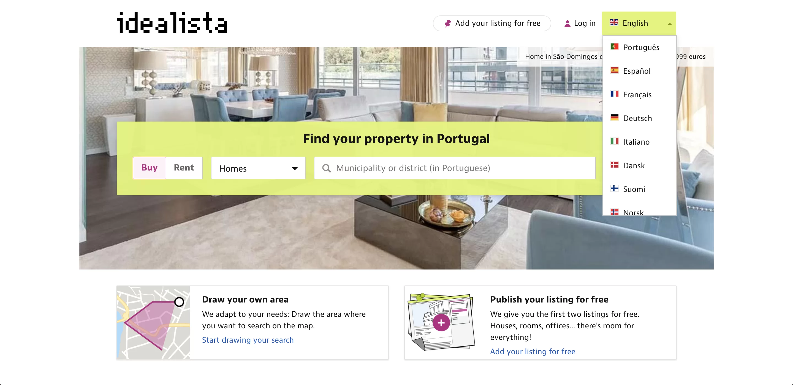
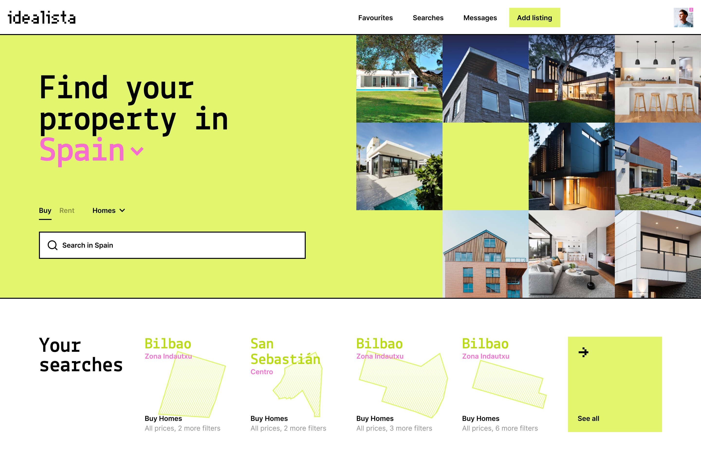
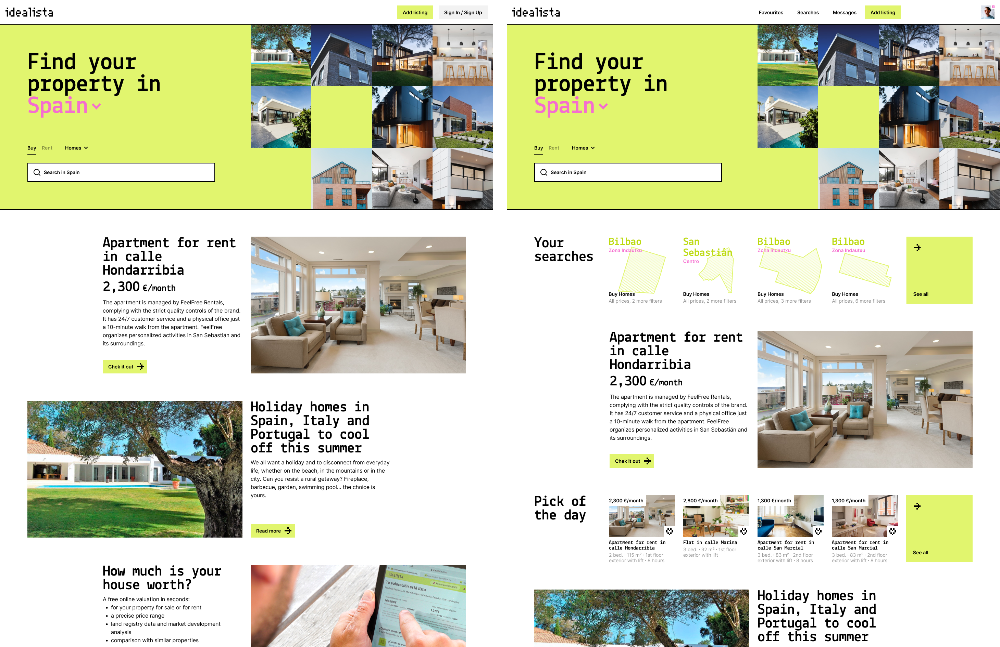
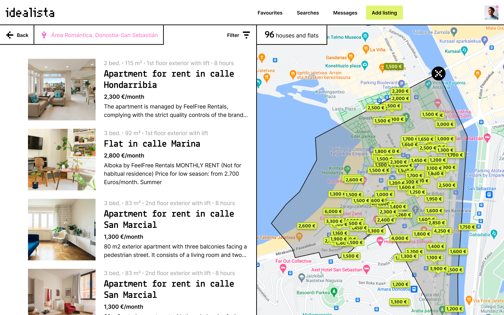
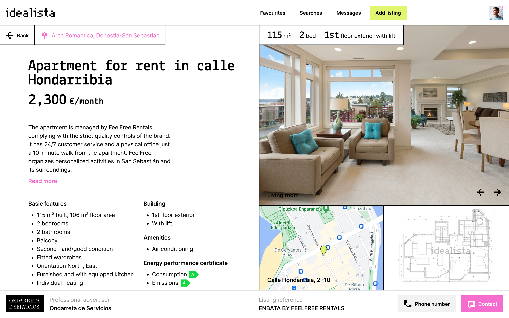

Platform
Web
Role
Product Designer
Date
2023
Idealista is the leading real estate marketplace in southern Europe. It currently ranks number one in all three countries in Spain, Italy, and Portugal. It is the marketplace used by over 50,000 real estate agencies, with over 3 million property listings.
When I first encountered the Idealista website, stark contrasts immediately caught my attention. While Idealista stands as a distinguished brand in the real estate space with a defined character, its online interface seemed somewhat distant from that brand ethos. The challenge? To bridge this gap and craft an interface that truly resonated with what Idealista represented. Additionally, there were usability concerns – the main page wasn't intuitively guiding users based on their familiarity with the platform, and the property detail page was fraught with redundant information blocks.
Before diving headfirst into redesigning, I embarked on a journey of understanding the user. Through the research, I clearly distinguished between two primary user groups: the seasoned Idealista visitors and the newcomers. This distinction was pivotal in my redesign approach. Furthermore, I looked at market leaders and emerging platforms in the real estate space, and Airbnb stood out with its seamless combination of map and list views. This seemed like an intuitive solution for users wanting more context in their property search.
Here's how the journey unfolded:
The new interface is a harmonious blend of Idealista's robust tech character and its stature as a solid real estate marketplace. It's a visual delight and a reflection of the brand's promise.
The main webpage unfolds like a welcoming guide for first-time visitors, showcasing the unique benefits of using Idealista with handpicked property examples. In contrast, seasoned users are greeted with their main activities, making their journey on the site feel personalized and efficient.
The fusion of map and list views is inspired by Airbnb's approach. This combination simplifies the user's interface, providing a richer context during the property search.
The revamped property detail page is a testament to the power of clarity. Users can now perform a swift yet comprehensive property analysis by placing priority elements such as photos, price, concise information, apartment plan, and location at the forefront. Gone are the days of wading through repetitive blocks of information.
With these changes, I aimed to redefine the Idealista user experience — ensuring that every interaction reflects the brand's ethos and an effortless journey for the user. It's not just about redesigning; it's about reimagining how users connect with Idealista.